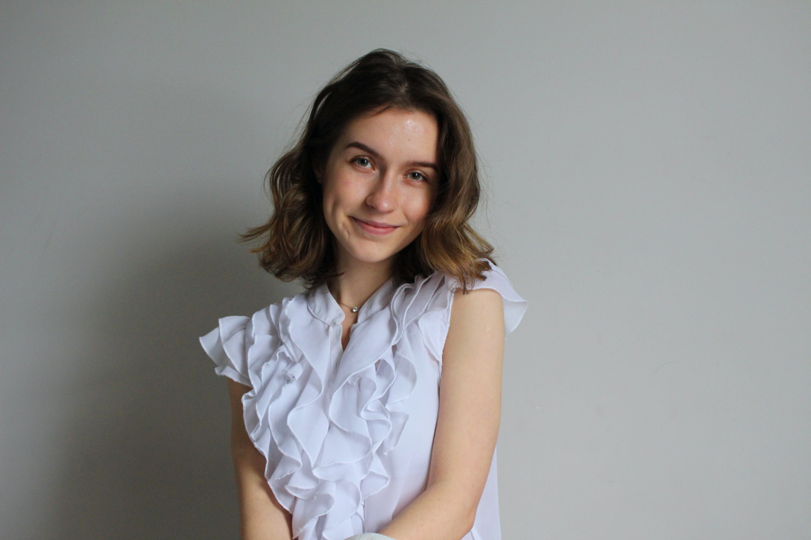

UI/UX Designer/ Web Developer
MTL, Canada | anaverenceanu@gmail.com | LinkedIn | Portfolio
Hi there! I am Ana, an ambitious self-taught designer/developer ready to start working and acquire as much knowledge as I can. I love to design, I love to interpret, I love to visualize and I like to code... Got it? Anyways, here below you will find all my paper work and highlights. Have fun!
Google UX Design Certificate | UI/UX Design Certificate
DEC, Architectural Technology
February 2023 - Present
In charge of redesigning the Tropinka Summer Camp website in order to create a better experience for users and help many navigate through the website on desktop/tablet/phone with ease and interest;
See preview: shorturl.at/lDX08
March 2022 - August 2023
Redesigned the official website of furniture store with the help of the marketing team to keep it up to date with the new trending best practices resulting in having a higher number of intrigued clients;
Created visuals to communicate information about upcoming discounts and offers while integrating photographic, graphic, and typographic elements on a daily basis.
Be in charge or creating the daily mail newsletter sent to existing and potential clients via email;
Act as a on the floor interior designer and design consultant when my help was needed and helped;
Extensive use of Photoshop, Adobe InDesign and CS Cart on a daily basis;
Daily use of the E-commerce marketplace CS Cart to work on the company's website.
May 2022 - Octomber 2022
Single handedly acted as a project manager, architectural technologist and interior designer all at once;
I contributed to over dozen projects in a startup company as the sole employee with a background in architecture and by doing so, we were able to attract customers and sell multiple projects with specs and detailed architectural drawings.
Figma | Adobe Id | Adobe Photoshop | Adobe XD | Wordpress | Canva | CS Cart | Adobe Ai
Google workspace | Miro | Microsoft workspace
Filmora | iMovies | Adobe Photoshop
Revit | 3Ds Max | AutoCAD | Sketchup | Lumion | My Ipad, my pencil and Procreate
English - Expert | French - Expert | Romanian - Native | Russian - intermediate